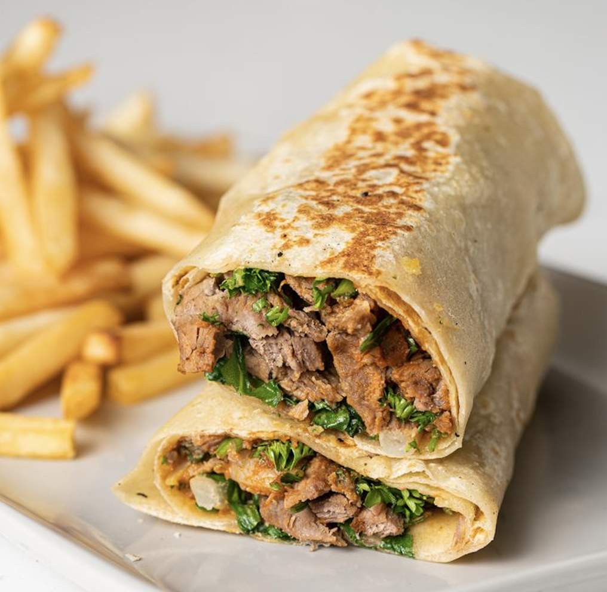
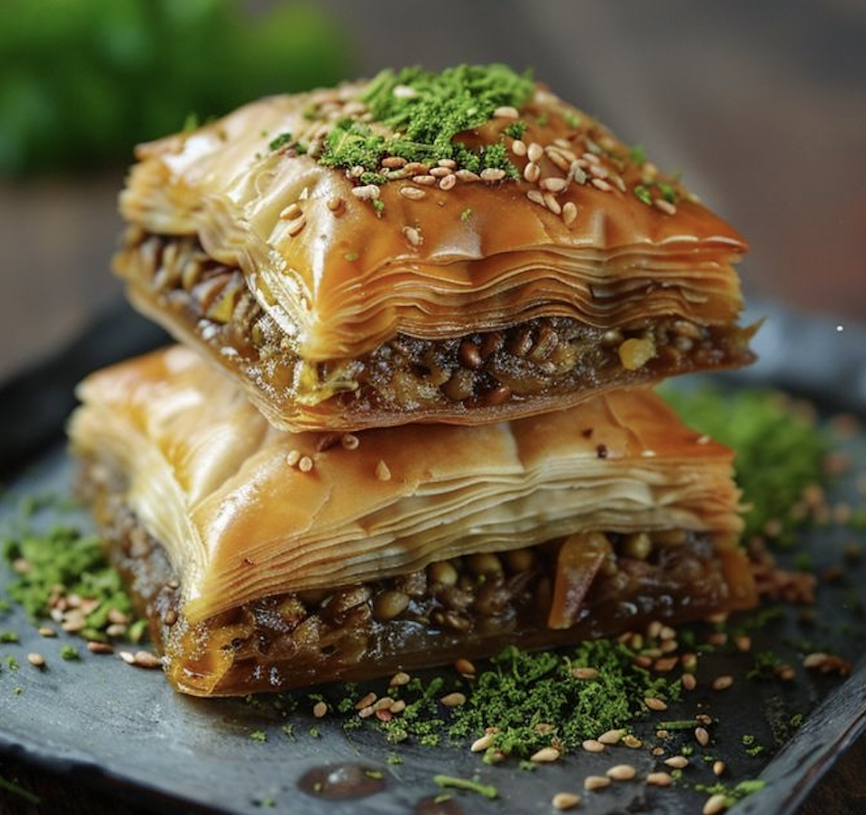
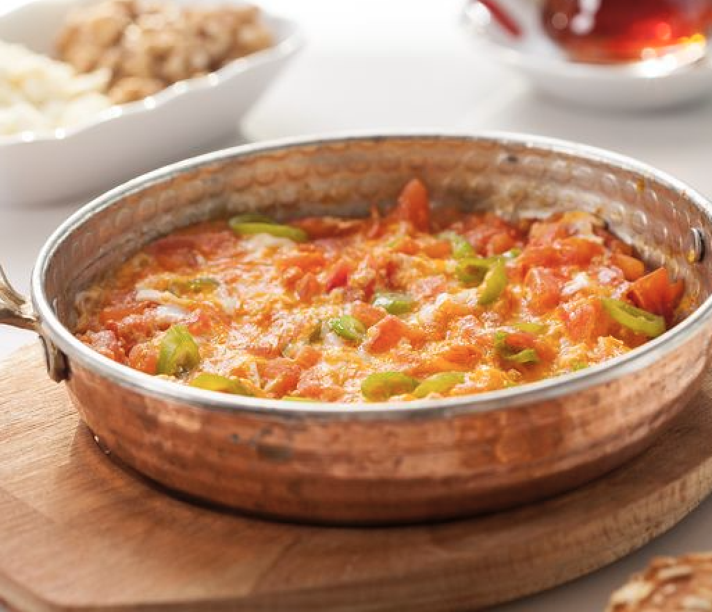

케밥 (Kebap)🌮
케밥은 터키를 대표하는 고기 요리로, 양고기, 소고기, 닭고기 등을 숯불에 구운 요리
케밥 종류:
-쉬시 케밥(Şiş Kebab)
-도너 케밥(Döner Kebab)
-이스켄데르 케밥(İskender Kebab)

바클라바 (Baklava)🥪
바클라바는 얇은 필로 반죽을 여러 겹으로 겹쳐 견과류(특히 호두, 피스타치오)와 함께 꿀 시럽을 부어 구운 달콤한 디저트
특징:
-삭하고 달콤하며, 촉촉한 속 재료가 함께 어우러져 매우 풍부한 맛을 자랑함
-터키뿐만 아니라 발칸 반도, 그리스, 중동 등지에서도 인기 있는 디저트

멘멘 (Menemen)🫓
멘멘은 터키식 아침 식사로, 계란과 토마토, 고추, 양파를 함께 볶은 요리
특징:
-향신료를 추가하여 맛을 더욱 풍부하게 만들며, 일반적으로 빵과 함께 먹음.
-신선한 재료로 간단히 만들 수 있어 아침식사로 매우 인기가 높습니다.